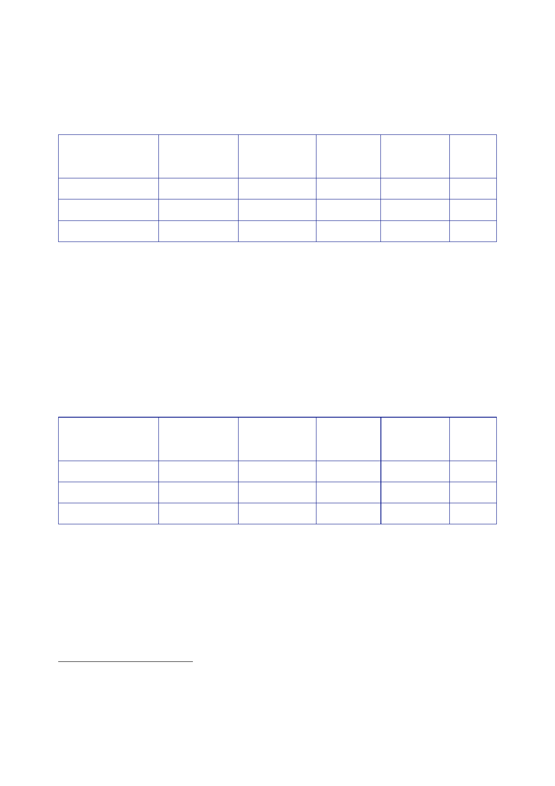

The Report
of the Iraq Inquiry
and
US$13.7bn disbursed.650
Table 1
shows the breakdown of those totals by
funding
source.
Available
funding
Of which
obligated
Of which
disbursed
US
Development
Appropriations
Fund for Iraq
Vested
and
seized
assets
International
funding
24.0 18.0
2.7 13.6
8.2
13.0
2.5
n/a
3.0
8.3
2.4
n/a
Total
58.3
23.7
13.7
1109.
The GAO stated
that they did not have complete and reliable information
on
obligations
and disbursements by international donors.
1110.
The GAO figure
for international funding reflected the lower end of the
range
(US$13.6bn
– US$17.3bn) pledged by international donors at the 23/24October
2003
Madrid
Donors Conference.
1111.
A July 2005
GAO report updated the figures for the Development Fund for
Iraq
(DFI) only,
to 28 June 2004.651
Table 2
shows the updated breakdown by funding source.
Available
funding
Of which
obligated
Of which
disbursed
US
Development
Appropriations
Fund for Iraq
Vested
and
seized
assets
International
funding
24.0 21.0
2.7 13.6
8.2
17.0
2.5
n/a
3.0
14.0
2.4
n/a
Total
61.3
27.7
19.4
1112.
The GAO
reported that Iraqi funds (from the DFI and vested and seized
assets)
had been
used primarily to pay the operating expenses of the Iraqi
government, such
as salary
payments and ministry operations. Approximately US$7bn had been
used for
relief and
reconstruction projects.
650
US General
Accounting Office, Report to Congressional Committees, June
2004, Rebuilding
Iraq.
Resource,
Security, Governance, Essential Services, and Oversight
Issues.
651
US General
Accounting Office, Report to Congressional Committees, July
2005, Status of
funding and
reconstruction
efforts.
192